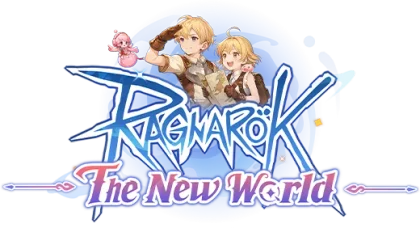
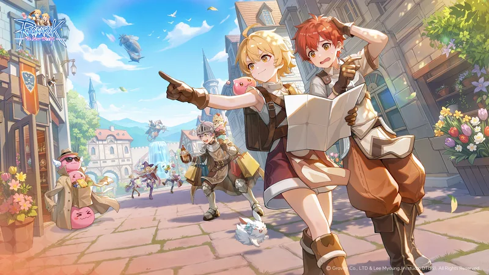
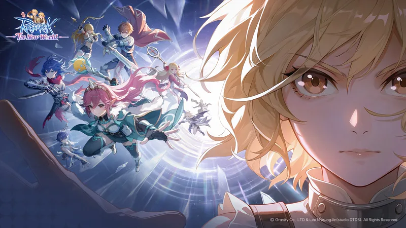
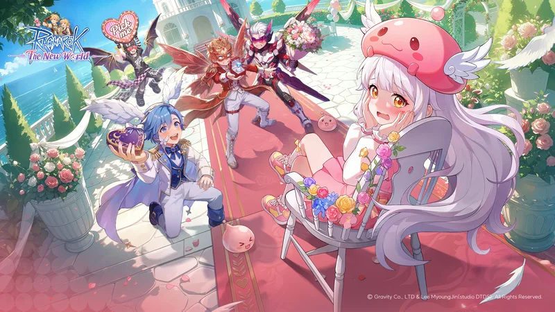
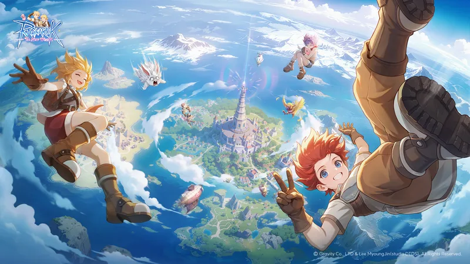

Remember Your First Poring?
Prontera, the music, your old party… Ragnarok is back as a brand-new, free open-world game.
PLAY FREE ON STEAMFree to play on Steam · Windows PC
This is a Windows PC game. On your phone?
Some adventures never leave you.
The world you loved is still here. The grind that held you back is gone.

01ThenYour first steps into Prontera.
NowProntera is back, and it is waiting for you.

02ThenGrinding for your first job change.
NowChange jobs anytime, at no cost.

03ThenDressing up to stand out in town.
NowFree tailoring and custom dyeing. Your look, your way.

04ThenWalking every map, one step at a time.
NowClimb, swim and fly across a seamless open world.
Which Class Was Yours?
Choose the class you loved, or try a new path.
Swordman
Sword and shield, raised in Prontera.
The World You Know.
A New Adventure Awaits.
Remember getting lost on the road to Payon?
Open World Adventure
The first open-world RO to offer a seamless, free exploration experience! Climb, swim, and fly as you wish.
Those nights debating stat points with friends?
Unlimited Build Variety
No fixed meta, no standard solution. Mix and match skills freely, and respec and change jobs at zero cost!
That breath you held at the refiner?
Less Grind, More Chill
Grow even while you’re offline. Resource retrieval is free forever, and you can safely refine up to +15 without losing levels or breaking your gear!
Leaving the game on all night to farm?
No Grind, Just Fun
Auto-battle frees up your hands, while offline rewards accumulate continuously. No burnout, no competition. Just pure RO fun, made easy.
Showing off your first rare headgear?
Make RO Yours
Free tailoring, custom dyeing and detailed adjustments. Mix and match pieces to create a unique look across the server!
Your Old Party Is Still Waiting.
Same friends, new adventures. Gather your party and step back into Midgard together.


Back to Midgard in 3 Easy Steps
Open Steam
Press Play Free on Steam. The game page opens on Steam.
Install for free
Download the game. It needs at least 30 GB of free space.
Create an account and log in
Make your Gravity account in the launcher, then log in and enter Midgard.
Quick answers
Is it really free?
Yes. Ragnarok: The New World is free to play on Steam. It includes optional in-app purchases.
Do I need an account?
Yes. A Gravity account is required and you create it in the game launcher the first time you start.
Will it run on my PC?
It runs on Windows PC. Steam lists 12 GB of RAM as the minimum and 16 GB as recommended, plus 30 GB of free disk space and a broadband connection.
Is this the original Ragnarok Online?
No. It is a new game with a familiar world and classes, rebuilt as an open world. It is not the 2002 client.
Is the game in Thai?
Yes. Steam lists Thai with full audio support, along with English, Indonesian and Simplified Chinese.
Midgard Is Calling You Home.
Install, log in and start a new adventure in the world you remember. Free to play on Windows PC.
PLAY FREE ON STEAM